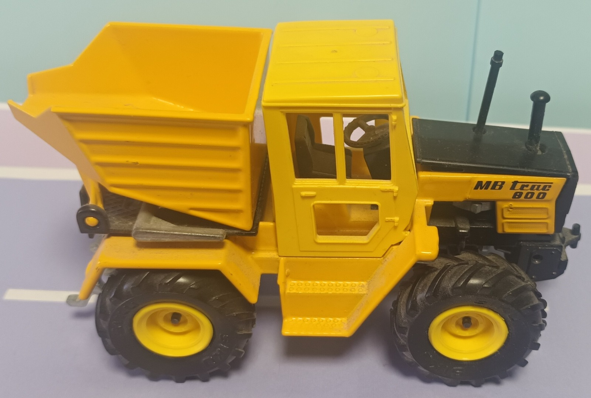

Unikat mit ArbeitslauneGelber Baustellen-Klassiker
Siku MB trac 800 Kipper
Gelber Mercedes MB trac 800 mit kräftigen Reifen, schwarzer Haube und großer Kippmulde. Sieht aus, als würde er jeden Schreibtisch sofort zur Baustelle erklären.
- Massiver Siku-Auftritt
- Kippmulde in Signalgelb
- Rustikaler Sammlercharme